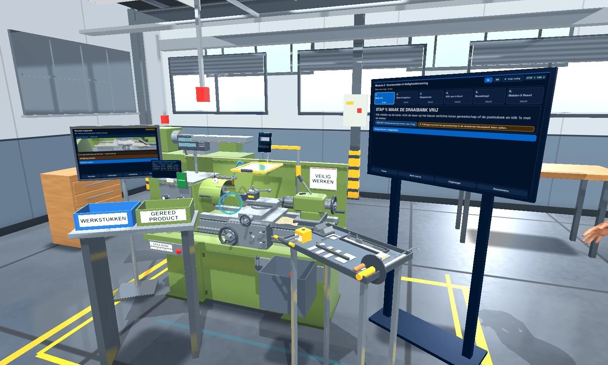

Alleen de twee wijsvingerknoppen
Knop indrukken is vastpakken, loslaten is neerleggen. Daarmee bedien je zowel de klauwplaatsleutel als de handwielen, de beschermkap en de schuifmaat, links- én rechtshandig.
Onze draaibanktraining is geen specifieke typetraining voor één merk machine, maar een algemene voorbereiding gericht op Nederlandse en Europese veiligheidsrichtlijnen. Een vergeten klauwplaatsleutel, werkhandschoenen aan of een open beschermkap is op elke draaibank even gevaarlijk — hier oefenen leerlingen die basisregels rustig voordat ze achter de echte draaibank gaan staan.

Je kunt elk onderdeel los inzetten ter voorbereiding op een praktijkles, of alles achter elkaar laten uitvoeren zonder hulpaanwijzingen. Omdat de oefening algemene veiligheidsregels traint, sluit deze aan op elke conventionele draaibank in jullie werkplaats.

Klik op de 4 controlepunten om het verschil te zien:
Leerlingen hoeven geen gamers te zijn en leren geen trucje voor één specifiek merk. De bediening en opbouw zijn zo rustig mogelijk gehouden, zodat de vakdocent daarna aan de echte draaibank in het lokaal alleen nog de specifieke bediening van die machine hoeft aan te wijzen.
Knop indrukken is vastpakken, loslaten is neerleggen. Daarmee bedien je zowel de klauwplaatsleutel als de handwielen, de beschermkap en de schuifmaat, links- én rechtshandig.
Je hoeft in VR niet rond te lopen met een stuurknuppel. Na de veiligheidscheck sta je direct recht voor de draaibank, net als op een echte werkplek in het lokaal.
Op het A4-rapport vanaf de docenttablet staan vijf praktische punten die de vakdocent samen met de leerling bij de eigen draaibank op school aanwijst en aftekent.
Naast Draaibank VR hebben we de algemene voorbereiding Elektrotechniek VR (veilig spanningsloos werken volgens NEN 3140 & EN 50110). Die draait op precies dezelfde docenttablet en VR-brillen en kost als losse extra module eenmalig € 5.000,- excl. BTW.
Omdat deze training geen typetraining is voor één specifiek merk, volgt elk onderdeel de vaste veiligheidsregels uit de Nederlandse wetgeving én de geldende Europese richtlijnen voor veilig werken met metaaldraaibanken:
| Nederlandse & Europese richtlijn | Vaste regel aan de draaibank | Hoe de leerling dit oefent in VR |
|---|---|---|
| NL: Arbocatalogus Metaal & Onderwijs EU: Richtlijn 89/656/EEG (PBM) |
Geen werkhandschoenen bij draaiende delen, geen losse kleding of sieraden, lang haar vast en altijd een veiligheidsbril op. | Verplichte eerste stap in Onderdeel 1: een klasgenoot controleren én de eigen veiligheidsbril en handschoenen op orde maken. |
| NL: Arbobesluit art. 7.7 EU: Machinerichtlijn 2006/42/EG & EN ISO 23125 |
Draaiende delen zijn afgeschermd met een klauwplaatkap, de klauwplaatsleutel blijft nooit achter en beveiligingen worden niet overbrugd. | De draaibank start niet zolang de beschermkap openstaat of de klauwplaatsleutel nog in de drieklauw zit (Onderdeel 3 & 4). |
| NL: Arbobesluit art. 7.5 EU: Richtlijn Arbeidsmiddelen 2009/104/EG |
Pas meten met de schuifmaat, bijstellen of spanen verwijderen met spanenhaak en kwast wanneer de hoofdspil volledig stilstaat. | Wie meet of schoonmaakt terwijl de klauwplaat nog uitloopt, krijgt direct een rustige pauze met heldere uitleg (Onderdeel 5). |
| NL: Arbobesluit art. 7.14–7.16 EU: EN ISO 13850 & EN ISO 23125 |
Bewust inschakelen, direct kunnen stoppen via de noodstop bij gevaar en nooit vanzelf herstarten na het ontgrendelen van een noodstop. | Oefenen met zichtbare onbalans van het werkstuk, direct de noodstop indrukken en veilig uitschakelen (Onderdeel 6). |